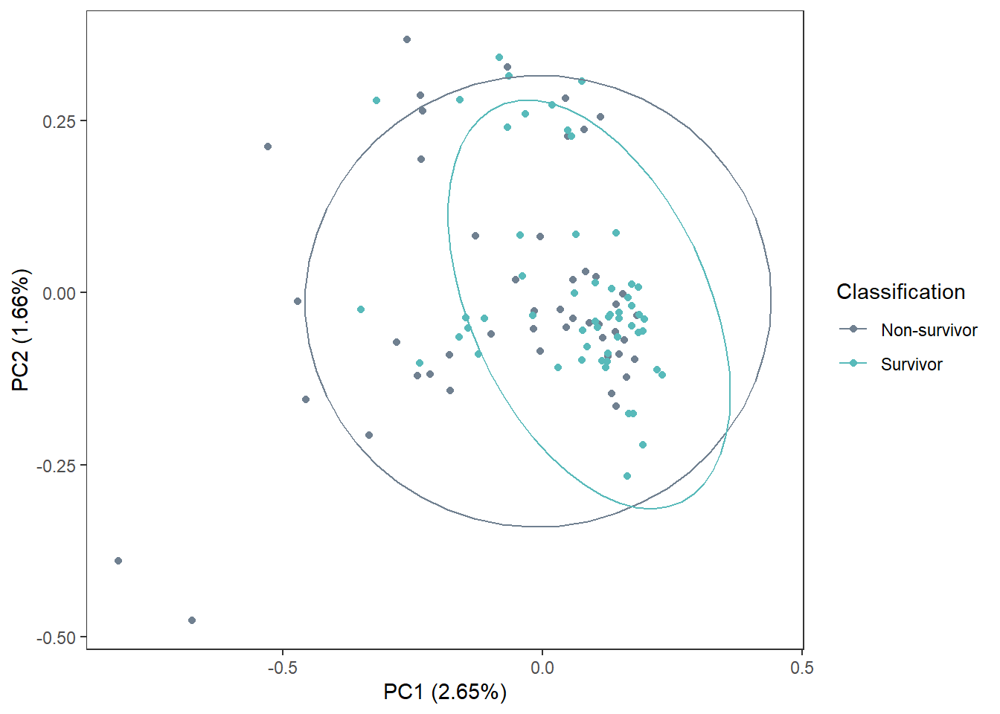
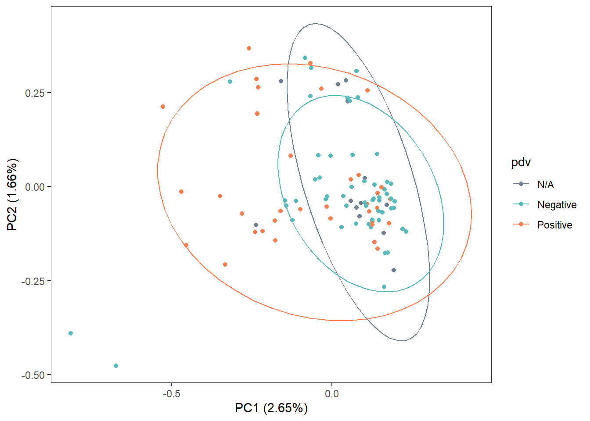
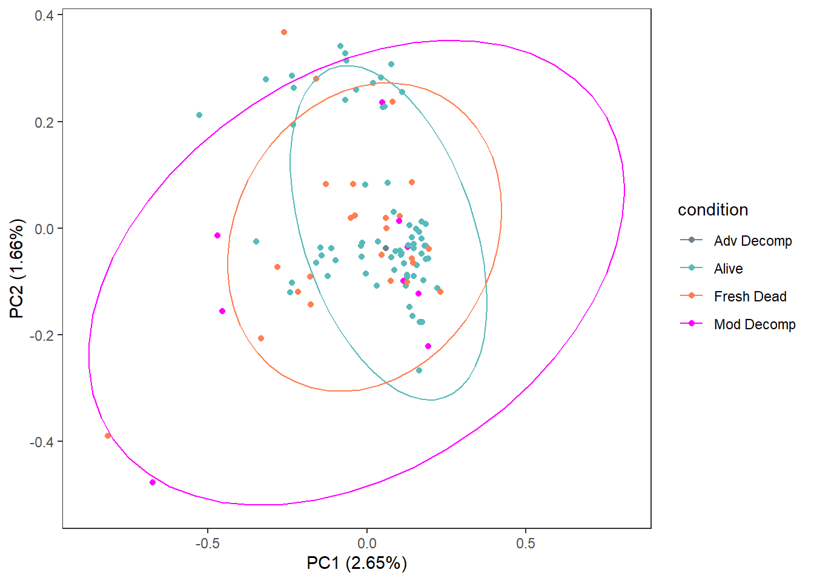
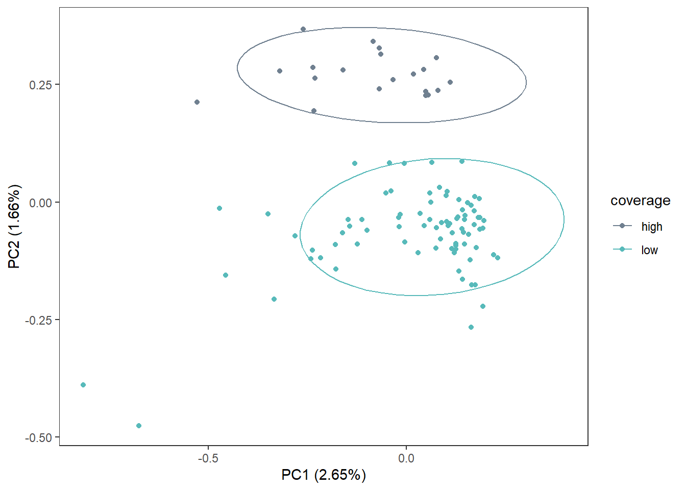
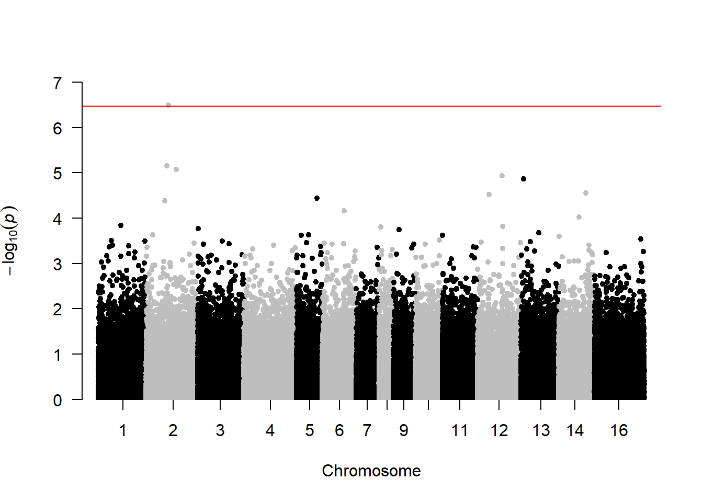

5 GWAS - rrBLUP
5.2 Data
snp.matrix <-
fread("C:/Users/Christina/OneDrive - University of Maine System/pv-wgs/allsamples_maf_prune.raw") %>%
rename_with(gsub,
pattern = "\\_[A-Z]{1}$",
replacement = "", colnames(.))
snp.info <-
fread("C:/Users/Christina/OneDrive - University of Maine System/pv-wgs/allsamples_maf_prune.map") %>%
setNames(c("chr", "snp", "cM", "pos")) %>%
select(!cM) %>%
filter(snp %in% colnames(snp.matrix))
meta <-
fread("Output Files/metadata_tidy.csv") %>%
mutate(seq.id = gsub("B5GAN", "", seq.id)) %>%
filter(seq.id %in% snp.matrix$IID)5.4 Population structure
5.4.1 Heatmap
No obvious clustering of samples

jpeg("Figures/grm_heatmap.jpeg", height = 8, width = 8, units = "in", res = 400)
heatmap(grm, col=rev(heat.colors(75)), cexRow = 0.4, cexCol = 0.4)
dev.off()## png
## 25.4.2 PCA
Again, seemingly no sample clustering
pca <- prcomp(grm, scale=FALSE, center=FALSE)
# Variance explained by first 8 PCs
eigenvalues <- pca$sdev^2
prop <- round((eigenvalues/sum(eigenvalues)*100), 2)[1:8]
prop## [1] 2.65 1.66 1.44 1.38 1.34 1.33 1.31 1.28## Warning in geom_bar(stat = "identity", fill = barfill, color = barcolor, :
## Ignoring empty aesthetic: `width`.
pca.data <-
data.frame(
sample = rownames(pca$x),
x = pca$x[,1],
y = pca$x[,2]) %>%
merge(., meta, by.x="sample", by.y="seq.id")
labelx <-
paste0("PC1 (", prop[1], "%)", sep="")
labely <-
paste0("PC2 (", prop[2], "%)", sep="")
pca <-
ggplot(pca.data, aes(x=x, y=y)) +
geom_point() +
labs(x=labelx,
y=labely) +
theme_bw() +
theme(panel.grid=element_blank())
ggsave("Figures/allsamples_popstruct_pca.jpeg", pca, width = 5, height = 5, units = "in")
ggplot(pca.data, aes(x=x, y=y, col=classification)) +
geom_point() +
stat_ellipse() +
scale_color_manual(values=c("slategray", "#58baba")) +
labs(x=labelx,
y=labely,
color = "Classification") +
theme_bw() +
theme(panel.grid=element_blank())
ggplot(pca.data, aes(x=x, y=y, col=pdv)) +
geom_point() +
stat_ellipse() +
scale_color_manual(values=c("slategray", "#58baba", "coral")) +
labs(x=labelx,
y=labely) +
theme_bw() +
theme(panel.grid=element_blank())
ggplot(pca.data, aes(x=x, y=y, col=sex)) +
geom_point() +
stat_ellipse() +
scale_color_manual(values=c("slategray", "#58baba", "coral")) +
labs(x=labelx,
y=labely) +
theme_bw() +
theme(panel.grid=element_blank())## Too few points to calculate an ellipse## Warning: Removed 1 row containing missing values or values outside the
## scale range (`geom_path()`).
ggplot(pca.data, aes(x=x, y=y, col=age.class)) +
geom_point() +
stat_ellipse() +
scale_color_manual(values=c("slategray", "#58baba", "coral", "magenta", "black")) +
labs(x=labelx,
y=labely) +
theme_bw() +
theme(panel.grid=element_blank())## Too few points to calculate an ellipse## Warning: Removed 1 row containing missing values or values outside the
## scale range (`geom_path()`).
ggplot(pca.data, aes(x=x, y=y, col=condition)) +
geom_point() +
stat_ellipse() +
scale_color_manual(values=c("slategray", "#58baba", "coral", "magenta")) +
labs(x=labelx,
y=labely) +
theme_bw() +
theme(panel.grid=element_blank())## Too few points to calculate an ellipse## Warning: Removed 1 row containing missing values or values outside the
## scale range (`geom_path()`).
ggplot(pca.data, aes(x=x, y=y, col=factor(seq.run))) +
geom_point() +
stat_ellipse() +
scale_color_manual(values=c("slategray", "#58baba")) +
labs(x=labelx,
y=labely) +
theme_bw() +
theme(panel.grid=element_blank())
ggplot(pca.data, aes(x=x, y=y, col=coverage)) +
geom_point() +
stat_ellipse() +
scale_color_manual(values=c("slategray", "#58baba")) +
labs(x=labelx,
y=labely) +
theme_bw() +
theme(panel.grid=element_blank())
5.5 Configure data
5.5.2 Configure phenotype data
Non-survivor = 0, Survivor = 1
phenotypes <-
meta %>%
select(seq.id, classification) %>%
setNames(c("id", "phenotype")) %>%
mutate(phenotype = ifelse(phenotype=="Non-survivor", 0, 1))
# Make sure sample ID order matches
unique(phenotypes$id == rownames(x)) # no## [1] TRUE FALSEphenotypes <-
phenotypes[order(match(phenotypes$id, rownames(x))), ]
unique(phenotypes$id == rownames(grm)) # yes## [1] TRUE## [1] TRUE5.6 GWAS Model 1: genomic relationship matrix
Note: P3D TRUE and FALSE give same results, but TRUE runs much quicker
## [1] "GWAS for trait: phenotype"
## [1] "Variance components estimated. Testing markers."5.6.1 Extract results
Set names to defaults for manhattan plot.
GWAS outputs -log10(pvalues), convert to pvalues.
Try FDR and Bonferroni p-adjustment methods.
gwasResults <-
model %>%
select(snp, chr, pos, phenotype) %>%
setNames(c("SNP", "CHR", "BP", "logP")) %>%
mutate(CHR = as.numeric(gsub("HiC_scaffold_", "", CHR))) %>%
mutate(P = 10^(-(logP)),
fdr = p.adjust(P, method = "fdr"),
bonf = p.adjust(P, method = "bonferroni"))
write.csv(gwasResults, "Output Files/allsamples_gwas.csv",
row.names = FALSE)5.6.2 Manhattan Plot
# Threshold for significance
bf <- (-log10(0.05 / nrow(snp.info)))
fdr <- -log10(0.05)
# Bonferroni
manhattan(gwasResults,
suggestiveline=FALSE,
col=c("black", "grey"),
genomewideline = bf,
p = "P", logp = TRUE)
# FDR
manhattan(gwasResults,
suggestiveline=FALSE,
col=c("black", "grey"),
genomewideline = fdr,
p = "fdr", logp = TRUE)